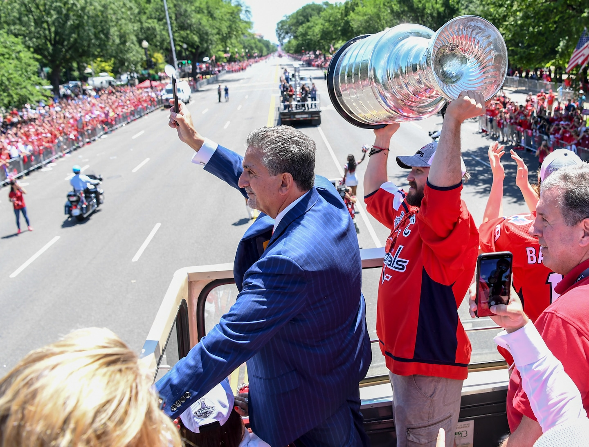
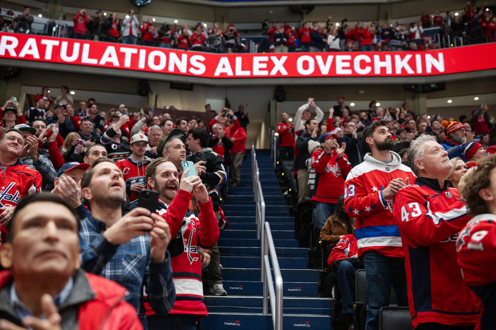
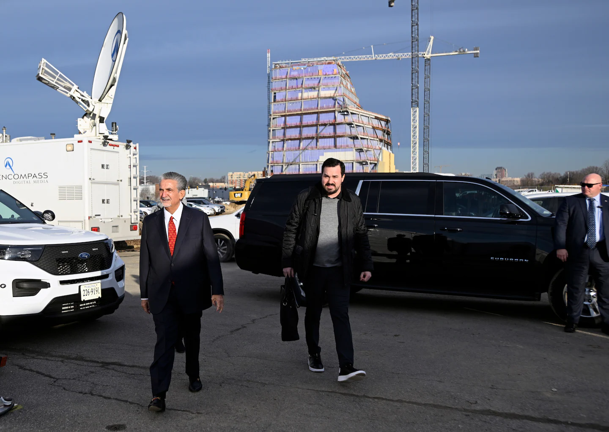
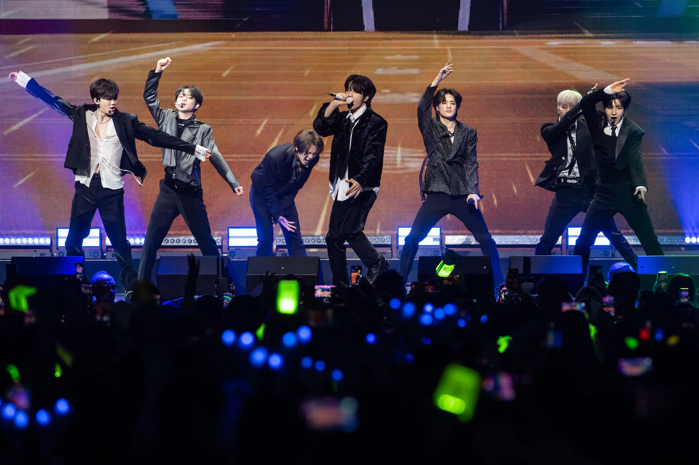
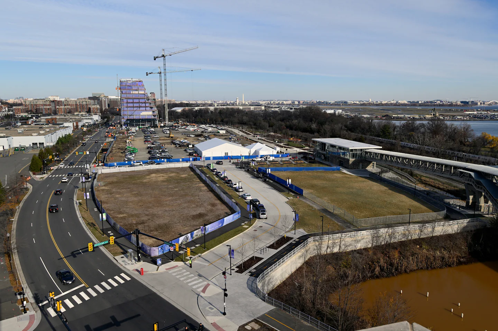
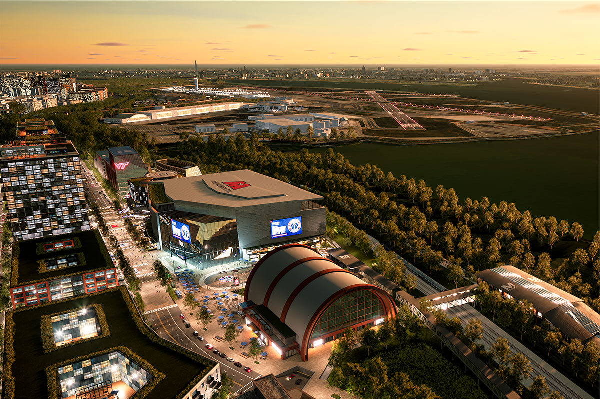
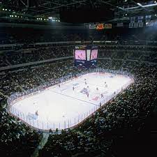

The offer from the mayor was just what Ted Leonsis had been looking for. For months, the billionaire owner of the Washington Wizards and Capitals had been pressing the D.C. government to pay at least half the cost of modernizing his aging downtown arena. Now, in an email on Dec. 10, a Sunday afternoon, Mayor Muriel E. Bowser was offering just that — $500 million toward an $800 million project to keep his basketball and hockey teams playing in the city for decades to come.
Leonsis responded two hours later, saying he would review the proposal right away and suggesting they meet. On Tuesday morning, the mayor presented her offer at Leonsis’s corporate offices at Capital One Arena, in a conference room with windows overlooking the street below. They spoke for an hour before the Democratic mayor brought up the elephant in the room. She said she had heard chatter that Republican Virginia Gov. Glenn Youngkin was about to announce a deal to build an arena for the teams on the other side of the Potomac River. She asked Leonsis if it was true.
This story has been reproduced as part of coursework for the Philip Merrill College of Journalism at the University of Maryland. It was originally published in The Washington Post.
Leonsis spun 360 degrees in his chair. Nothing had been signed, he said, but he acknowledged he would be joining Youngkin for an announcement the next day. Suddenly, it became clear: He hadn’t invited the mayor to his offices to discuss her offer. He’d done it to tell her she was too late. “If you would have offered this to me earlier,” he said, “I would have accepted it.” Leonsis’s decision to pull his teams out of the city represents a consequential rupture in what has been a successful partnership between a three-term mayor and an owner who had invested in the District for more than two decades and pledged to stay there. If local and state officials in Virginia sign off, the move could also stall an economic engine that has drawn more than 2 million visitors per year to Chinatown, an area that has lately struggled with empty storefronts, office vacancies and crime.
The follwing chart depicts the yearly average home game attendance for both teams.
The construction of a sports and entertainment complex at the site Leonsis has chosen in Alexandria would further shift wealth and spending to the prosperous Northern Virginia suburbs. It would be a legacy-defining coup for a Republican governor who has flirted with running for president.
The District faced competition from Virginia only because Leonsis had begun quietly exploring a new home for his teams in 2022, after years of complaining about crime and the noise of buskers outside his arena. He had come to believe the mayor was more interested in other professional sports teams, particularly the Commanders, whom Bowser was courting to return to the District.
Leonsis first raised specific options for an arena renovation with city officials in March 2022. Talks dragged on for over a year, leaving the owner frustrated.
Leonsis waves to the crowd as Ovechkin hoists the Stanley Cup during a celebratory parade in D.C. in June 2018. (Jonathan Newton/The Washington Post)
Capital Center holds a lot of memories for DMV sports fans. Here's Alex Ovechkin lifiting the Stanley Cup in 2019.
In her negotiations to keep the Wizards and the Capitals from leaving, the mayor was hobbled by the city’s self-imposed limit on borrowing, which prevented her from offering the money Leonsis said he needed upfront. Not until six days before the meeting at his corporate offices did a major financial transaction allow her to offer hundreds of millions of dollars more upfront.
This account of months of secret negotiations that culminated in Leonsis’s decision to leave the District draws from interviews with him, Bowser and Youngkin, as well as with more than three dozen political leaders, government officials and business executives. Many of them spoke on the condition of anonymity to describe sensitive conversations. The Washington Post also obtained emails and planning and financial documents that figured into the discussions.
Leonsis, 67, said that in the end his decision did not hinge on crime, noise or feeling underappreciated. It wasn’t even about money, he claimed. “This was about the future,” he said, and the chance to build something special on a bigger plot of land. “We can continue to innovate and build new things if we want, as part of this partnership. It was … well, we can make a more bespoke experience.”
Bowser, 51, said she’s not sure Leonsis seriously considered the offers she made last fall given how valuable a new Virginia arena could be for Monumental Sports and Entertainment, his company that he plans to take public.
“I think it’s really simple. Ted wants to build from the ground up. He wants a large, undeveloped parcel,” she said. “He wants a bigger uplift for his investment than he could get in Washington. And he should be honest about that.”
The agreement between Leonsis and Youngkin is not a done deal. It requires passage by the Virginia General Assembly and the Alexandria City Council, which together must approve borrowing nearly $1.5 billion — and kick in more than $300 million for transportation, a parking facility and concert hall. A powerful Senate Democrat has objected to Youngkin’s plan, Alexandria residents have raised traffic concerns, and Bowser has sparred with Monumental over whether Leonsis’s lease requires that the teams remain in the building until 2047.
“I have nothing firm from the city.“

(Illustration by Marissa Vonesh/The Washington Post; Marvin Joseph/The Washington Post; iStock)
The morning after Leonsis told Bowser she was too late, he and Youngkin stood on a stage together inside a heated tent at Potomac Yard in Alexandria. They announced that the site, a former rail yard, would be the new home for the Washington Wizards and Washington Capitals.
Although some elected officials and Alexandria business leaders celebrated, there was immediate blowback. D.C. activists protested outside the downtown arena, Alexandria residents began organizing in opposition and former Wizards star Bradley Beal filmed a video urging Leonsis to reconsider. On national television, ESPN host Tony Kornheiser called the move “villainy.”
The Chinatown area of downtown was pockmarked by empty lots and vacant buildings in 1994, when construction contractor Abe Pollin proposed building an arena there. His two professional sports teams, the Capitals and the basketball franchise then known as the Bullets, had spent years playing home games at a stadium in suburban Maryland. He wanted them to play in the heart of the city.
The District government offered five acres between Sixth and Seventh streets NW for the project, but the city’s finances were in ruins. If Pollin wanted his arena, he would have to build the $220 million project himself — and he did, borrowing heavily to do it. D.C. provided a below-market land lease and tax benefits that helped pay part of the debt over time. The 20,674-seat venue opened as MCI Center in 1997.
Two years later, Pollin sold majority control of the Capitals to Leonsis, a grandson of Greek immigrants who became the first in his family to graduate from college when he got his degree from Georgetown University. Leonsis founded a software-catalogue business and sold it at age 27, walking away with $20 million, and later became a senior executive at the early internet giant AOL.
After Pollin died in 2009, Leonsis added a majority stake in the Wizards and the arena. Chinatown was booming, and Pollin was being credited for making it happen. Law firms were moving in, retailers were competing for storefronts and the sidewalks were teeming with visitors. D.C. renamed the block of F Street NW next to the arena Abe Pollin Way.
Along with the arena, Leonsis acquired Pollin’s mortgage — something he has often referred to as “the worst building deal in professional sports.” The Washington Nationals play in a baseball stadium that was almost completely paid for by the District. By contrast, Leonsis pays around $21 million annually on a mortgage, according to Monumental.
When Bowser began her first term as mayor in 2015, she couldn’t have gotten off to a better start with Leonsis. A District native, she had served eight years on the D.C. Council and took a more pro-business approach than some of her colleagues.
Washington Capitals fans celebrate at Capital One Arena after Alexander Ovechkin reached 1,500 career points on Dec. 7. (Craig Hudson for The Washington Post)
Eight months after she took office, the two agreed to build a $65 million, 4,200-seat facility in Southeast Washington where the Wizards would practice and two other Leonsis basketball teams, the Washington Mystics and Capital City Go-Go, would play home games. The District paid more than 90 percent of the cost, and Monumental brought fans to one of the poorest parts of the city.
At a news conference announcing the deal, Leonsis gave the new mayor a peck on the cheek. “I think we have the most dynamic and accomplished mayor of any major city in our country,” he said. Bowser smiled and bowed. They both wanted a long-term pact to keep his NBA and NHL teams downtown.
Bowser was well aware of the price that was paid when then-D.C. Mayor Sharon Pratt failed to reach a stadium deal with Jack Kent Cooke, the owner of Washington’s NFL franchise, in the early 1990s. Cooke moved his team to Maryland, and Pratt lost her reelection bid after one term.
Leonsis often spoke of the “double bottom line” of doing good while doing well. He revitalized the Capitals by drafting stars such as Alexander Ovechkin, turning the team into a source of civic pride as it repeatedly won division titles and eventually the Stanley Cup. He made charitable contributions and invested in and around his arena, then called Verizon Center.
He told The Post in 2016 that he would never leave. “Have we talked to Virginia? We have not. Have we talked to Maryland? We have not. I would never do that. My goal would be stay where we are or stay within the city.”
Frustrations mount
As time went on, though, Leonsis chafed at what he viewed as city officials’ lack of urgency in addressing conditions around the arena. Buskers and street musicians — sometimes with full drum sets and amplifiers — were so loud below Leonsis’s office at the arena that he covered windows with thick wooden shelving.
In 2018, three D.C. Council members introduced a bill to crack down on amplified noise, an effort spurred by complaints from downtown residents and business owners. The measure went nowhere in the face of opposition from street musicians and activists who said it would stifle cultural expression. Council members introduced the bill again in 2019, and again it stalled.
Leonsis arrives for his news conference in Alexandria, Va., on Dec. 13., to announce the Potomac Yard project. (John McDonnell/The Washington Post)
When council member Brooke Pinto (D-Ward 2) took office in June 2020, she heard from Monumental representatives almost immediately. They complained about crime around the arena, regulations affecting the business and the buskers’ loud noise.
“Their displeasure with some of what was going on in the city was very clear, and they made that known in all of my meetings with them,” Pinto said. In 2021, Pinto co-sponsored the council’s third attempt at anti-noise legislation. Again, it failed to pass.
Besides the noise, Leonsis was concerned about public safety and the vacancies that spread as office workers remained home following the worst of the covid-19 pandemic. “Covid changed the world in every city,” said Raul Fernandez, one of Monumental’s minority owners and a friend of Leonsis’s since their AOL days. “Some cities handled it better than others, and some handled being on the other side of covid better than others.”
Violent crime fell citywide from 2021 to 2022, but it rose 46 percent in the area within a half-mile of the arena, according to police data. Robberies jumped 84 percent.
Leonsis and his staff told the D.C. Council and the mayor’s office that they weren’t doing enough to address violence, drug use, homelessness and struggling businesses around the arena and the practice facility in Southeast. The crime was putting staff and fans at risk, they said, and they repeatedly asked city officials to assign more police to the areas around Monumental’s facilities.
Bowser dispatched her chief of staff and deputy mayor for planning and economic development, John Falcicchio, to visit Leonsis in mid-2022. As Leonsis tried to discuss his concerns about the number of businesses closing in the area and the increase in crime, music from the street below interrupted their conversation.
The K-pop group NCT Dream performs at Capital One on Dec. 11. (Kyle Gustafson for The Washington Post)
Looking to upgrade
By that time, Leonsis had begun to feel that the 25-year-old arena’s corridors, retail spaces and club-level seating lagged behind competitors and needed to be updated. In March 2022, company representatives and Falcicchio had begun analyzing three possibilities: a $355 million partial renovation, an $820 million full renovation and a $1.5 billion newly built arena. Monumental decided to pursue the full renovation, in part because it could yield more “high value” seats that were closer to the floor and a range of new luxury and premium suites to maximize ticket revenue.
The discussions were progressing enough that Monumental continued to invest in and around what had been renamed Capital One Arena. In 2022, it completed $125 million in upgrades from the previous decade and prepared to begin spending another $85 million.
In December, Leonsis celebrated the anniversary with a blog post. “Cheers to 25 MORE years!” he wrote. But behind the scenes, as the mayor began her third term and declared reviving downtown a top priority, Leonsis had started to look outside the city. His staff sent criteria for a new arena location to economic development officials in Virginia, who began looking for possible sites on the company’s behalf.
On Dec. 30, 2022, a state economic development official in Richmond sent emails to several localities in Northern Virginia. They were looking for potential sports arena sites for a “highly confidential prospect.” The secret endeavor had a code name, the emails said: “Project Potter.” The emails laid out Monumental’s requirements: 10-12 acres for the arena, an additional 5-16 acres for parking, 5-17 acres for training facilities and 10-75 acres for a “mixed-use complex (commercial, residential, entertainment).”
Another desire was “a community that would welcome the engagement of approximately 2.5M+ people annually through games, concerts and events.” Virginia officials came back to Leonsis with a few potential sites outside the Beltway. Monumental also had preliminary talks with Maryland officials, who floated the idea of a new arena near the teams’ previous home, in Landover, according to Monumental. The company wasn’t interested.
But Leonsis wasn’t happy in the District, either. He felt his teams were not a top priority for the mayor and her staff, who had been working to woo the Washington Commanders from Maryland to their old home on the Anacostia River. “I started hearing, ‘Well we want to bring the football team back,’” he said. The city’s baseball stadium needed repairs as well, he added. “They had to make investments. I go, ‘I don’t have a high level of confidence that I’m at the top of the stack.’”
During a Capitals game last year, he griped in the owner’s box that despite what he contributed to the city, its leadership seemed to care more for other teams, and he “couldn’t even get a fruit basket.” The mayor’s office got word. Her staff sent him a gift box with a candle and coasters adorned with D.C. logos.
For Youngkin and Leonsis, a shared vision
(Illustration by Marissa Vonesh/The Washington Post; Marvin Joseph/The Washington Post; iStock)
Monumental made little progress that spring in talks with D.C. officials, particularly after Falcicchio, the company’s point person in the mayor’s office, resigned in March after he was accused of sexual harassment. Later that month, Leonsis met with Bowser and, according to Monumental, told her he was reviewing an option across the Potomac. “You don’t want to go to Virginia,” she said twice, according to notes taken by two executives present for that meeting and described to The Post. In an interview, Bowser said she did not remember Leonsis raising Virginia, adding, “I took Virginia seriously the whole time.”
In April, JBG Smith representatives gave Leonsis his first look at the land. They took him up to the roof of an office building overlooking the 70-acre site, a combination of vacant lots, parking and a shopping plaza anchored by a Target. From there he could see the Potomac River, Reagan National Airport, even Capital One Arena.
“When this coalesced to me was when I went out and climbed on the roof,” Leonsis said. He could envision how he could bring all of his facilities together into one hub. “You go jeez, it’s like, there’s water. I love being on the water. Jeez there’s the airport. I really like to fly out of there. And we can put a hotel and an office building here. Right now we’re in five different places,” he said. “Visiting teams could fly in and be at the hotel and be eating here. Boy, the leagues would love that. The teams would love that.”
With the potentially viable option at Potomac Yard, Leonsis made his first concrete request of the District. On June 7, Monumental asked for $600 million toward an $800 million renovation.
Leonsis and Bowser agreed on a Sept. 1 deadline to come to terms. That timeline also opened a window for Virginia. In the following weeks, economic development officials from the state and the city of Alexandria kept up regular calls with Monumental to see whether they could sketch out a deal. Later in June, Alexandria Mayor Justin M. Wilson (D) met with Kelly and other JBG Smith executives in the developer’s marketing center, where a built-to-scale model showed the neighborhood’s potential.
Kelly also invited Sen. Mark R. Warner (D), a JBG Smith investor and longtime acquaintance of Leonsis’s, to come look at their plan. Warner was impressed. “My immediate concern was where is the governor going to be on this, where is the community going to be,” he said in an interview.
Youngkin, 57, a former basketball player at Rice University, had risen to the top of the investment giant Carlyle Group, becoming co-chief executive in 2018 before running for governor in 2021. He and Leonsis had met before Youngkin entered politics, traveling in similar social circles in the ultrawealthy Washington-area business class. They spoke about the project for the first time in June. “I was skeptical simply for lots of, lots of reasons,” Youngkin said. “But I was also incredibly intrigued because of the uniqueness of this, and we really began to assess the opportunity of two teams moving at one time.”
The two men met in person on July 21 in the same Falls Church office complex that houses Youngkin’s political action committee. Rather than gather in the PAC’s windowless conference room, Youngkin invited Leonsis to the 14th-floor offices of a private business where they could enjoy expansive views — and meet in secret. Leonsis described his vision for a sports and entertainment district at Potomac Yard. The governor — taking notes, as he often had when sizing up deals for Carlyle — laid out his priorities: He would not support broad new taxes on Virginians or give public money directly to the company as an incentive. He wanted Alexandria and the commonwealth to see economic benefits. He wanted to build something special.
“That meeting was an important one,” Youngkin said. “And it was a place where we were able to construct a shared vision about where we might be able to go.”
But by Sept. 1, it seemed like Youngkin might be out of luck. Bowser and Leonsis broadly agreed to proceed on the $800 million renovation. Bowser countered Leonsis’s $600 million request with $432 million — a nearly 50-50 split. Leonsis was amenable.
A rendering of the project.
“The mayor and I went back and forth and it’s like, all right, let’s split it,” he said. “Let’s be partners.” They arranged to meet less than a week later, Sept. 7, in the Walter E. Washington Convention Center. The mayor and her team, with D.C. Chief Financial Officer Glen Lee in attendance, made their pitch with a 30-page slide deck. Going into the meeting, Monumental staff expected the city to propose providing its share of the project cost upfront. Instead, Bowser called for Monumental to front the full cost of the project and for the District government to pay back its share over six to 10 years. City officials promised the $432 million would come from a new tax on properties within a two-mile radius of the arena. Bowser also offered to invest tens of millions of dollars to build housing and stabilize the Metro system.
The city’s aim was to make Leonsis a partner in a rebirth of downtown much in the way the arena did when it opened under Pollin. But Leonsis didn’t want to take the risk Pollin had by borrowing all the money upfront with the assurance that the city would pay off its share later. In the meeting, Leonsis raised concerns about crime around the arena, but the money was his primary focus. He said he didn’t like the idea of a tax that would take money out of other business owners’ pockets, and he didn’t want to have to rely on future District leaders to follow through on Bowser’s promises. He told the mayor he needed the city’s contribution upfront.
During the previous two decades, the District government had injected hundreds of millions of dollars into economic development projects that remade the city: Nationals Park, the convention center hotel, the Yards development in Southeast, the Wharf in Southwest. But Leonsis had shown up when the spigot was running dry. Under a law the D.C. Council passed more than a decade ago to safeguard the city’s finances and improve its bond ratings, payments toward debt have to stay beneath 12 percent of total spending. There was nowhere near enough capacity for the District to borrow $800 million, or even $400 million, without violating that 12 percent cap.
“We were at 11.9999999 with like 10 more nines,” Pinto said. “So we didn’t have the ability to borrow.” Bowser’s proposed new tax on downtown properties was an attempt at a workaround, but Leonsis wouldn’t go for it.
A rendering of the project.
Leonsis often spoke of the “double bottom line” of doing good while doing well. He revitalized the Capitals by drafting stars such as Alexander Ovechkin, turning the team into a source of civic pride as it repeatedly won division titles and eventually the Stanley Cup. He made charitable contributions and invested in and around his arena, then called Verizon Center.
Leonsis often spoke of the “double bottom line” of doing good while doing well. He revitalized the Capitals by drafting stars such as Alexander Ovechkin, turning the team into a source of civic pride as it repeatedly won division titles and eventually the Stanley Cup. He made charitable contributions and invested in and around his arena, then called Verizon Center.
Leonsis often spoke of the “double bottom line” of doing good while doing well. He revitalized the Capitals by drafting stars such as Alexander Ovechkin, turning the team into a source of civic pride as it repeatedly won division titles and eventually the Stanley Cup. He made charitable contributions and invested in and around his arena, then called Verizon Center.